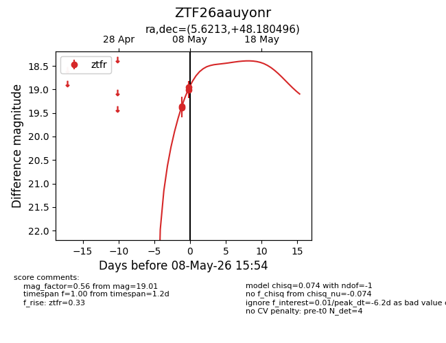
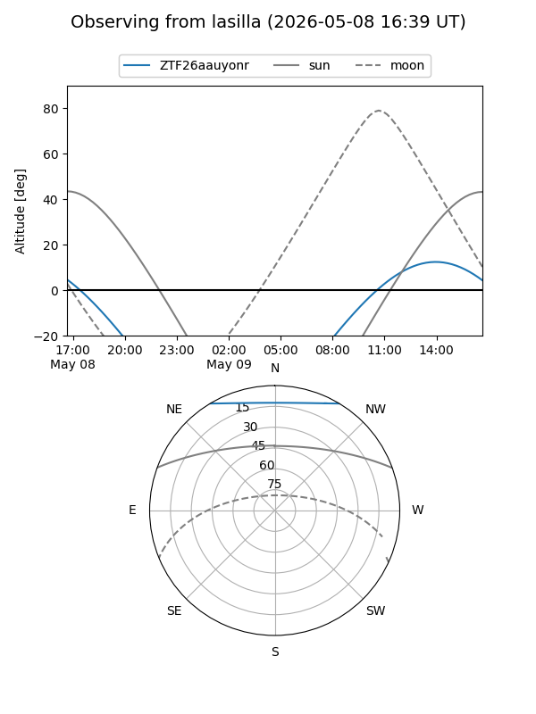
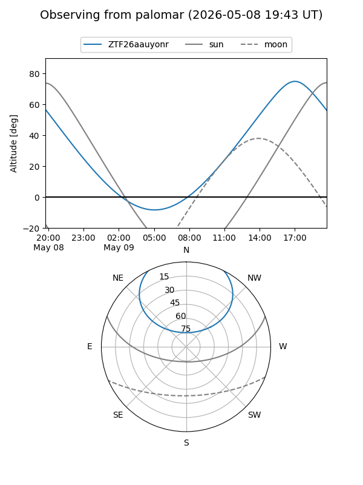
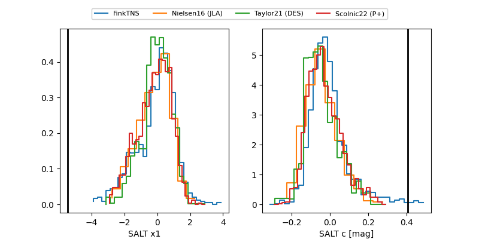

ZTF26aauyonr
Target ZTF26aauyonr at 2026-05-08 15:56
Aliases and brokers:
FINK: link
Lasair: link
ALeRCE: link
alt names
ZTF26aauyonr (ztf,fink_ztf)
Coordinates:
equatorial (ra, dec) = 5.6213,+48.18050
equatorial (HMS+DMS) = 00:22:29.11,+48:10:49.78
galactic (l, b) = (117.9558,-14.41132)
Flags:
Photometry:
last ztfr=19.01
4 ztfr detections
Lightcurve

Visibility


Additional plots
